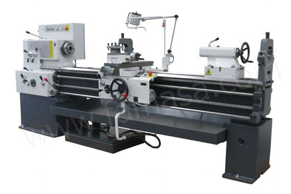

Un Tornero Fresador es la persona encargada de poner a punto la maquinaria que lleva a cabo la fabricación de piezas. Desarrolla su trabajo en un taller de mecanizado torneando superficies de diferentes tipos: cilíndricas, cónicas, roscas con máquinas tradicionales y por control numérico, como la fresadora
Al manipular una máquina fresadora en el taller de mecanizado, tienen que cumplirse una serie de requisitos y cumplir una serie de prevención de riesgos laborales. Puesto que emplean piezas en movimiento y pueden producirse contactos impredecibles.
¿Qué es un tornero fresador?
Los operarios deben llevar ropa de algodón que no sea muy holgada y si trabajan con el pelo largo, hay que llevarlo recogido. El sitio de trabajo tiene que estar siempre y en toda circunstancia limpio. Para ayudar a los operarios a trabajar con mayor comodidad, la zona de trabajo debe estar bien alumbrada.
Qué es un tornero fresador: Competencias del tornero fresador
Determinar procesos de mecanizado partiendo de la información técnica incluida en los planos, normas de fabricación y catálogos
Preparar máquinas y sistemas, de acuerdo con las características del producto y aplicando los procedimientos establecidos
Programar máquinas herramientas de control numérico (CNC), robots y manipuladores siguiendo las fases del proceso de mecanizado establecido
Operar máquinas herramientas de arranque de viruta, de conformado y especiales para obtener elementos mecánicos, de acuerdo con las especificaciones definidas en planos de fabricación
Verificar productos mecanizados, operando los instrumentos de medida y utilizando procedimientos definidos
Realizar el mantenimiento de primer nivel en máquinas y equipos de mecanizado, de acuerdo con la ficha de mantenimiento
Resolver las incidencias relativas a su actividad, identificando las causas que las provocan y tomando decisiones de forma responsable
Aplicar procedimientos de calidad, prevención de riesgos laborales y medioambientales, de acuerdo con lo establecido en los procesos de mecanizado
Adaptarse a diferentes puestos de trabajo y nuevas situaciones laborales originados por cambios tecnológicos y organizativos en los procesos productivos

Posibles salidas laborales como tornero fresador
Operadores de máquina cepilladora-limadora (metales)
peradores de máquina fresadora con control numérico (metales)